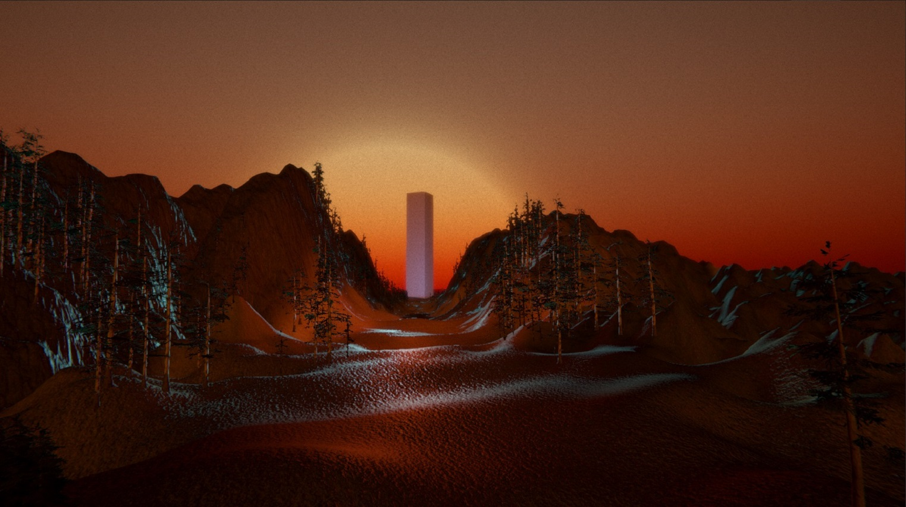
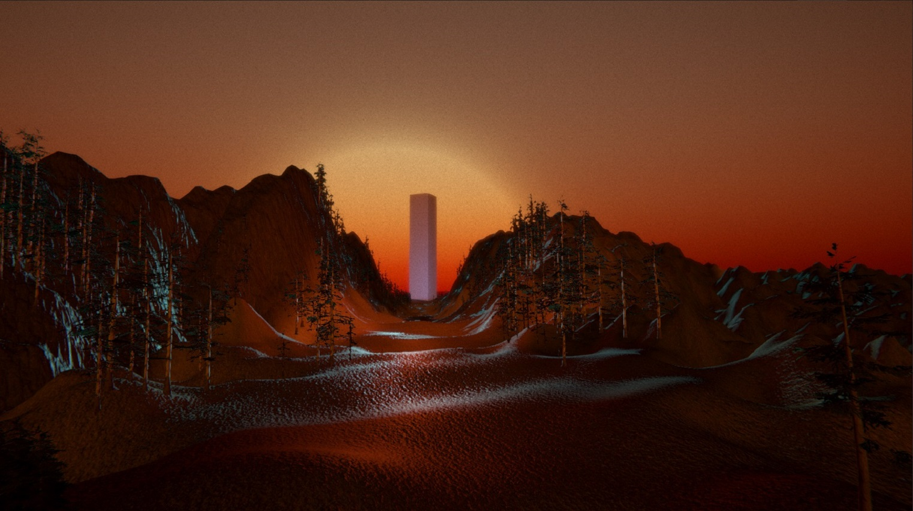

_Transition
Abstract
Both frustrating and mesmerizing states of mind are actors in this oniric scenery by exhibiting a constant yet unpredictable oscillation between organic and digital worlds. This switch is also present in the creative process. Through a constant transition between these states, lejeanf attempts to make visitors question themselves upon what they actually perceive being true or not.
Showcase
 

Mediums
VR experience - Will be exhibited at Mirage Festival 2018, Lyon, FR.
Dome performance - Vaux-En-Velin’s Planetarium show is under planning.
About
lejeanf

jeanf's artistic research is driven by an hybridation of object belonging to the technological realm confronted with the physical world by digitality.
Moving images are taking most part in his practice.
This aspect merges itself with a performative dimension, a taste for interactivity and an immersive character which all-in-all play with the notion of spacetime.
He combines video to technical objects that he makes and transforms himself.
jeanf directed the _Transition project from its inception to its realization.
http://lejeanf.com
Alexandre Andrieux

Alex is a creative coder who is all about revealing the intrinsic beauty of physical equations and maths that rule our universe.
From a background in the web industry, he uses various techniques to create abstract artworks with particle systems.
Alex imagined and programmed the physical models at play in _Transition.
http://icosacid.com/
Location
Les subsitances, Lyon, FR > http://www.miragefestival.com/
Planetarium de Vaux-En-Velin, FR > http://www.planetariumvv.com/
Music
Yngvesin - electronic music > https://soundcloud.com/yngvesin